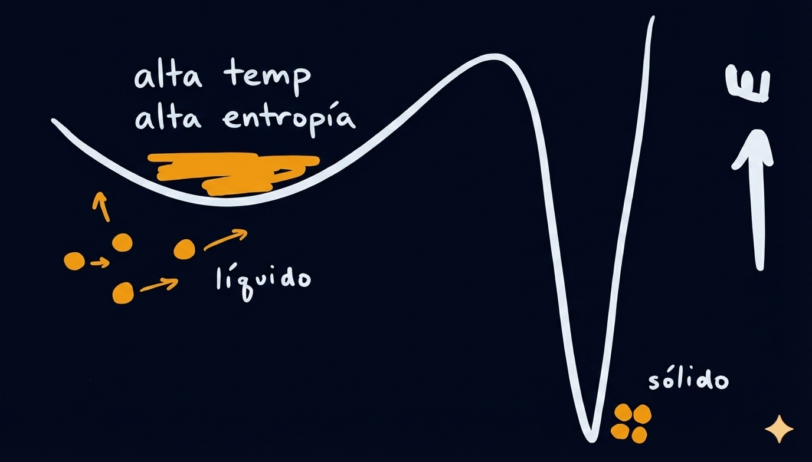
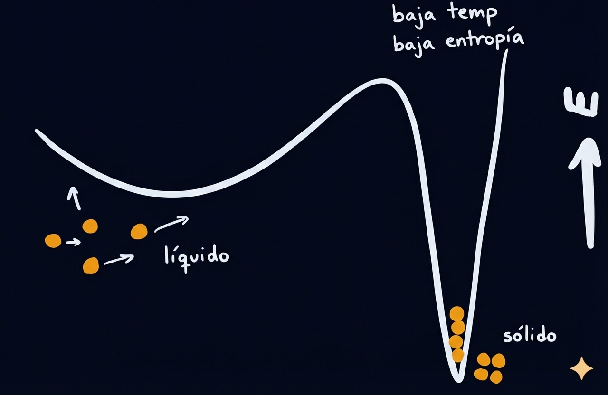
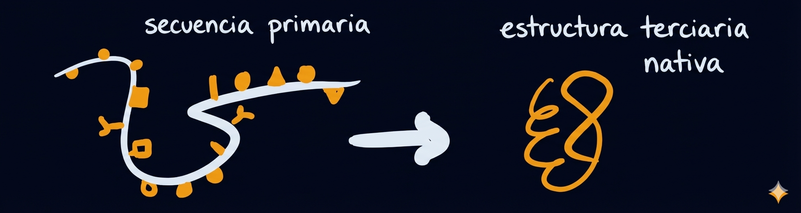

CINCO MONTAÑA Y ESPADA
Apacentando Moisés las ovejas... llegó al monte de Dios, el monte Horeb.
- ÉXODO 3:1
Intercambio de Energía
CADA INTERACCIÓN FÍSICA ENTRE UN TROZO DE MATERIA y otro lleva consigo la posibilidad de que se intercambie energía. Ya sea que estemos hablando de una bola de billar chocando con otra, o de un rayo de luz incidente que desencadena la transformación química de una molécula retiniana en un ojo, la energía siempre tiene que ser suministrada desde el entorno para conseguir que un objeto inicialmente inmóvil se mueva de un lugar a otro o cambie su forma. Ingenuamente, sin embargo, podríamos haber imaginado la disponibilidad de energía simplemente como una propiedad de la cosa que la transporta: una bola blanca rodando tiene una cierta cantidad de energía cinética, y ya sea que choque con una mano u otra bola, parte de esa energía se transferirá al objetivo.
De hecho, los proyectiles como bolas y balas son tecnologías especializadas. Podría decirse que están diseñados para ser indiscriminados en cómo comparten su energía con lo que sea que se interponga en su camino, pero aun así, los resultados pueden ser sorprendentemente mixtos. Si una bala rebota y vuela de regreso por donde vino, la mayor parte de su energía se queda con ella, incluso si la dirección del movimiento ha cambiado. Pero si se pega a su objetivo y se rompe, toda la energía que poseía se libera y se comparte, a veces con resultados devastadores.
La situación general resulta ser una en la que la capacidad de dos sistemas interactuantes cualesquiera para intercambiar energía puede depender de manera bastante sensible de una coincidencia específica entre cómo están construidos y cómo se mueven. Hay claras excepciones a este principio: el calor, por ejemplo, está garantizado que se moverá de un objeto caliente a uno frío en prácticamente cualquier situación, por lo que si bien tal conducción térmica puede ocurrir más rápido o más lento dependiendo de si está ocurriendo en una sartén de metal o en una baldosa cerámica en la nariz de un transbordador espacial, generalmente se puede confiar en que seguirá fluyendo hasta que las temperaturas se igualen. No obstante, el mundo abunda en ejemplos donde la energía solo se transmitirá de un lugar a otro cuando ocurra la coincidencia correcta entre el proveedor de energía y su receptor. La madera arrojada a una hoguera fortalecerá rápidamente la llama existente, pero la madera arrojada sobre un montón de leña fría no hará nada por el estilo. Un niño bombeando sus piernas con el tiempo correcto puede ir más y más alto en un columpio, pero si las mueve demasiado rápido o demasiado lento, el columpio se mantiene bajo. Y, quizás lo más sorprendente de todo, el reemplazo de unos pocos átomos en la cadena de ADN dentro de una bacteria puede hacer la diferencia entre poder comerse todo un frasco de azúcar, en una explosión de población microbiana voraz, y no poder digerir una sola molécula de la sustancia. Las colecciones de materia a menudo resultan ser muy específicamente buenas o malas para absorber energía de fuentes particulares dependiendo del estado en el que se encuentren. Ya hemos aprendido cómo la absorción de energía puede ser esencial para encontrar formas que sean particularmente estables. La trama ahora se complica, porque algunas formas resultan ser mejores para absorber energía que otras.
Resonancia y Forma
CUANDO SOMOS JÓVENES, APRENDEMOS QUE LAS BOTELLAS DE VIDRIO suenan cuando soplamos en ellas, y que las bandas de goma vibran cuando se pulsan; no solo esto, también notamos fácilmente que los tonos de los sonidos son diferentes dependiendo de qué tan llena esté la botella o qué tan tensa esté la banda. Para cuando somos un poco mayores, llegamos a apreciar que los instrumentos musicales funcionan explotando y mejorando estos efectos de manera sistemática: el tono que escuchamos es la frecuencia de una oscilación, y parámetros como la forma y el tamaño de una cavidad o la longitud y tensión de una cuerda afectan directamente qué frecuencias oscilatorias son favorecidas por el objeto vibrante.
La razón por la que estos factores afectan los tonos que escuchamos es que la frecuencia tiene que ver con el tiempo. Cuando una cuerda pulsada vibra, el número exacto de veces que recorre la misma secuencia de formas en un segundo dependerá de qué tan rápido una ondulación en un extremo de la cuerda pueda viajar al otro extremo, lo que a su vez se ve afectado por qué tan separados están los extremos y cuánta tensión está tirando de uno lejos del otro. Consideraciones similares entran en el cálculo cuando, en cambio, estamos hablando de ondas sonoras que se propagan a través del aire en una botella. Cualquier objeto vibrante de este tipo puede tambalearse a diferentes frecuencias dependiendo de cómo lo empujemos; sin embargo, la frecuencia más baja permitida (es decir, la frecuencia fundamental) siempre está determinada aproximadamente por la cantidad de tiempo que le toma a una perturbación correr de un lado del objeto al otro. Matemáticamente, este principio surge porque las vibraciones que permanecen en su lugar pueden pensarse como combinaciones simultáneas de perturbaciones que se mueven hacia la izquierda y hacia la derecha que viajan a una velocidad establecida por las propiedades del medio. Una serie de otras frecuencias naturales más altas, conocidas como armónicos, están determinadas por la misma física, ya que conduce a arrugas en el medio en escalas de longitud más corta (recorridas más rápidamente).
Primero encontramos la idea de que diferentes colecciones de materia prefieren ciertas frecuencias de oscilación al hablar de los sonidos que hacen, pero el punto particularmente interesante para nuestra discusión aquí es que los mismos principios pertenecen a los sonidos que la materia puede absorber. Una copa de vino produce un sonido particular cuando le das un golpe, pero también puede vibrar un poco si tarareas con gran determinación. Un poco de experimentación de este tipo con un objeto (o cavidad) que da buen soporte a las vibraciones revela que la cantidad que podemos hacer que las cosas se muevan tarareando depende del tono. Una diva de ópera puede gritarle a una copa hasta que se rompa, y podríamos cometer el error de pensar que todo lo que importaba era qué tan fuerte cantaba. Pero, de hecho, su canción podría no haber tenido el poder de romper nada en absoluto si la partitura musical simplemente se hubiera arreglado en una clave diferente, incluso si la hubiera cantado al mismo volumen.
Entonces, la frecuencia del sonido importa, y es fácil ver por qué. Una copa se rompe cuando su forma se deforma tanto que la tensión hace que diferentes partes del recipiente se agrieten y se separen entre sí. Para que esto suceda, la copa necesita ser empujada, y esto es lo que harán las ondas sonoras en el aire. La pregunta, entonces, es si a la copa le "gusta" o no moverse a la frecuencia de la canción. Recuerde que la copa tiene su propio tamaño, forma y propiedades materiales específicas, y estas determinarán cómo responde a cualquier onda sonora que empuje contra ella, que tendrá una frecuencia fundamental particular junto con armónicos más altos. Si el tiempo de las frecuencias de una canción particular que empuja la copa coincide con esas propiedades materiales, entonces los movimientos de la copa pueden crecer al absorber energía de la canción: cuando la copa se dobla hacia la izquierda, el aire empuja hacia la izquierda, y cuando la copa se dobla hacia la derecha, el aire puede empujar hacia la derecha. Si, en cambio, la vibración en el campo de sonido no está sincronizada con los movimientos preferidos de la copa, resulta una colisión mucho más frustrada, en la que el campo de sonido solo a veces empuja en la dirección del movimiento de la copa y otras veces empuja en contra.

El mismo montón de materia (en este caso, vidrio) puede tener formas diferentes, y estas formas generalmente diferirán en cómo vibran en respuesta a ser empujadas por el entorno. En consecuencia, el mismo sonido a la misma frecuencia, o tono, podría entregar suficiente energía a una forma de vidrio para romperla, pero resonar mucho menos con la misma materia presentada en una forma diferente.
La cooperación aparentemente coreografiada que obtenemos cuando la canción y la copa se tambalean a tiempo entre sí se llama resonancia, y el punto clave es que permite que el movimiento oscilatorio que está siendo impulsado por la canción resulte en contorsiones mucho más grandes en la forma de la copa. Después de todo, una fuerza que empuja en la dirección de su movimiento actual va a hacer que acelere, de modo que finalmente pueda subir más alto en alguna colina de energía potencial antes de tener que dar la vuelta. El ejemplo más familiar de este efecto es uno que aprendemos en el patio de recreo, bombeando nuestras piernas a tiempo con el movimiento de un columpio. Cada niño de jardín de infantes sabe que doblar las rodillas hacia adentro y hacia afuera al mismo ritmo al que el asiento se balancea hacia adelante y hacia atrás le permite subir más y más alto, y puede descubrir rápidamente que patear las piernas mucho más lento o más rápido que esto mantendrá las cosas en altitudes más bajas y menos interesantes. Contorsionar la copa hasta el punto de romperse es análogo a conseguir que el columpio vuele lo suficientemente alto, y se deduce que asegurarse de que la cantante cante en tonos que resuenen con la copa podría ser la diferencia entre un recipiente entero y un montón de fragmentos.
EN EL EJEMPLO DE LA COPA QUE SE ROMPE, SE SIENTE natural hablar de cambiar la forma en que canta la diva: si altera su tono, entonces la copa podría tambalearse más o menos de lo que lo hacía en el tono anterior. Pero también podríamos considerar un escenario en el que la canción, o "entorno impulsor", permanece fija, mientras que la forma de la copa es lo que variamos. La resonancia se trata de una coincidencia entre la fuente de energía ambiental y la materia que actúa como receptor para ella, por lo que puedes hacer que las cosas coincidan más o menos ya sea ajustando la materia (la copa) o ajustando la fuente (la voz). En consecuencia, el mismo montón de átomos se puede preparar en diferentes estados iniciales, y algunos de estos pueden ser mejores que otros para resonar con una oscilación en su entorno. El resultado es que la cuestión de cuánta energía se absorbe del entorno por un ensamblaje de materia puede ser una cuestión sensible de en qué estado se encuentra la materia actualmente.
Si las formas fueran cosas estáticas que simplemente diferían en su calidad como antenas para la energía lista para ser absorbida de su entorno, entonces la historia podría terminar aquí como una cuestión de curiosidad ociosa. Lo que hace que el punto sea mucho más significativo es que, al igual que con la copa resonante que se rompe en pedazos, la energía que absorbe la materia tiene el poder de reorganizarla en un nuevo estado. Lo hemos dicho antes, pero vale la pena reiterarlo: toda energía es movimiento o el potencial para provocar movimiento. Si las fuerzas impulsoras en el entorno son lo suficientemente fuertes, las propiedades de absorción de energía de la materia actualmente en forma de forma A podrían determinar si luego se transforma en la forma B. Por lo tanto, la forma en que la materia explora su espacio de formas posibles a lo largo del tiempo va a estar sesgada, a veces de manera muy consecuente, por el grado en que las formas particulares obtienen o no un buen acceso a las fuentes de energía en su entorno.
Paisajes de Energía y Escaleras Mecánicas
Para dar el mejor sentido a este proceso, ayuda volver a la bola errante del capítulo anterior. Nuestro enfoque allí estaba en cómo las escaleras mecánicas pueden hacer que ciertos pasos de montaña actúen como puertas de un solo sentido en un paisaje de energía potencial: la absorción de trabajo te levanta por un lado de una montaña, y rodar, rebotar y deslizarse por el otro lado disipa esa energía como calor, dejando el camino de regreso cerrado a menos que otra escalera mecánica esté disponible. Los factores que determinan la ubicación exacta y la dirección de cualquier escalera mecánica dada no fueron examinados. Ahora, sin embargo, a la luz de los efectos específicos de la forma como la resonancia, podemos explorar un nuevo tipo de consecuencia para las escaleras mecánicas que se deriva del hecho de que no todas las formas de ensamblar la misma materia son igualmente buenas para absorber energía de trabajo de su entorno. En particular, se da el caso de que no todas las pendientes en la cadena montañosa de la bola van a tener escaleras mecánicas en ellas, y el patrón preciso de dónde se sienten estas fuentes de impulso externo, y dónde no, determinará cómo se ve el viaje serpenteante de nuestra esfera errante.

Decir que diferentes formas de materia absorben energía de manera diferente del mismo entorno es como decir que al elegir nuestro entorno, elegimos un conjunto particular de escaleras mecánicas para instalar en un paisaje de energía. Una vez que nuestra bola comienza a explorar el espacio de lo que es posible, puede resultar que estas escaleras mecánicas sesguen el camino hacia estados particulares cuyas estructuras tienen propiedades distintivas con respecto a la absorción de energía (es decir, con respecto al acceso a las escaleras mecánicas).
Frecuencias Naturales
LA PREGUNTA A LA QUE HEMOS LLEGADO ES CÓMO SE SUPONE QUE SEPAMOS qué configuraciones para un ensamblaje dado van a ser buenas o malas para absorber energía de un entorno dado. Antes de abordar el tema completo en grande, sin embargo, será útil permanecer especializados un poco más y mirar nuevamente el caso de la resonancia mecánica. Aunque la vibración resonante es solo una de las muchas formas en que el estado actual de un trozo de materia puede afectar fuertemente cuánta energía absorbe de una influencia externa dada, es una de las formas más importantes, debido a la amplia gama de entornos donde puede ser relevante. En los ejemplos que hemos discutido hasta ahora (como una cuerda en un instrumento musical), es fácil salir con la idea algo equivocada de que hay una frecuencia fundamental que afecta lo que escuchamos cuando las cosas comienzan a vibrar, y esa es la frecuencia que va a importar para las cuestiones de absorción de energía.
De hecho, casi cualquier colección grande de partículas interactuantes es capaz de soportar vibraciones de muchas frecuencias diferentes. Además, el conjunto específico de frecuencias permitidas (llamadas frecuencias naturales) actúa como una especie de huella dactilar o código de barras que resume las características exactas del ensamblaje particular de piezas de las que surgen.
Para apreciar cómo surgen las frecuencias naturales, recuerde que cada forma que podríamos construir a partir de una gran colección de partículas corresponde a una ubicación en un paisaje de energía potencial, y algunas de estas ubicaciones resultan estar sentadas en el fondo mismo de un valle. En un valle normal en una cadena montañosa real, solo hay dos formas perpendiculares de caminar cuesta arriba: el eje norte-sur y el este-oeste. Para un sistema con muchas partículas, hay comparativamente muchas direcciones perpendiculares en el valle de energía potencial, y cada una de ellas corresponde a un reordenamiento ligeramente diferente de muchas o todas las partículas en la estructura. Es posible moverse a lo largo de cualquiera de ellas por una pequeña distancia. Además, en cada una de estas direcciones, el valle parecerá tener una cierta cantidad de curvatura o pendiente, a veces más, a veces menos. Si comenzáramos con un arreglo estable y luego moviéramos cada partícula en alguna dirección aleatoria por una pequeña cantidad, las cosas intentarían volver a su lugar, y el retroceso podría ser agudo o suave. El resultado es que no todas las formas de mezclar las partículas un poco para cambiar la forma moverán la misma cantidad de masa ligeramente cuesta arriba en el mismo grado: las frecuencias más lentas provendrán del desplazamiento de partículas pesadas en direcciones poco profundas, y las más rápidas provendrán del desplazamiento de partículas ligeras en direcciones empinadas. En general, la forma específica en que las diferentes masas están unidas y co-dispuestas en el espacio siempre dará lugar a un conjunto específico y distinto de diferentes movimientos vibratorios posibles de "modo normal" disponibles para la estructura, y cada uno de estos es capaz de absorber mucha energía a través de la resonancia si es impulsado a su frecuencia natural particular.
Exploración Sesgada
Al traer la idea de las frecuencias naturales de vuelta a la discusión de las escaleras mecánicas, por fin podemos comenzar a vislumbrar un argumento con implicaciones radicales. Recuerde que a dónde va la bola depende fuertemente de dónde haya escaleras mecánicas que entren y salgan; en otras palabras, que la serie de formas que adopta un montón de materia se verá afectada por qué cambios de forma pueden ser activados por la energía de trabajo suministrada por el entorno. Sin embargo, si cada forma que la materia puede adoptar tiene su propia huella digital específica de frecuencias naturales con las que puede resonar, entonces esto nos dice mucho sobre dónde va a haber ascensores y dónde no. Si el entorno está oscilando a un cierto tono, entonces las formas que son buenas para vibrar con esa misma frecuencia serán capaces de absorber grandes cantidades de energía de la canción, a través de la resonancia. El efecto de este movimiento resonante será precisamente levantar las cosas de su valle actual y dejarlas caer por alguna otra pendiente en una nueva forma que tiene un conjunto diferente de modos normales y frecuencias naturales.
La forma más fácil de apreciar el impacto de este efecto es compararlo con un modelo más ingenuo de cómo la materia podría explorar el espacio de formas posibles. Imaginamos un paisaje compuesto por una cuadrícula de valles, todos igualmente conectados a cada uno de sus vecinos por ascensores que corren a cada lado de la cresta. Con cada ubicación teniendo acceso igual y bidireccional a todas sus ubicaciones vecinas, esperamos que una exploración de este paisaje proceda de una manera aleatoria e imparcial. En consecuencia, no esperamos que el proceso de exploración exprese en última instancia ninguna preferencia en absoluto por un valle sobre otro. Traducido a términos donde cada valle corresponde a la forma de una colección de partículas, esto significaría que ninguna forma especial y particular podría ser más estable que cualquier otra.
En el caso real típico, embargo, la cantidad de elevación en cada valle depende sensiblemente de la disponibilidad de energía de trabajo externa en ese lugar particular, y de qué maneras empujan las fuerzas impulsoras externas. Como resultado, el camino de la bola errante ahora puede volverse sesgado. Hay momentos particulares en los que es más probable que uno sea escalado de una manera hacia un nuevo valle donde no existe un elevador comparable en la dirección de retorno, y estos momentos particulares son más propensos a ser aquellos en los que la cantidad actual de elevación es excepcionalmente fuerte, de modo que su fuerza típicamente disminuirá una vez que se cruce otra cresta. Traduciendo de nuevo, el resultado es que los puntos en el tiempo cuando el sistema se encuentra en una forma capaz de resonancia serán particularmente consecuentes en toda la historia de cómo evoluciona el arreglo de la materia con el tiempo, porque la energía de trabajo suministrada por la resonancia en esas coyunturas clave es lo que se necesita para impulsar las transformaciones irreversibles en la forma que dejan las marcas más duraderas en cualquier forma estable que surja con el tiempo.
No es coincidencia que haya una analogía aquí de la biología que se vuelve útil para ver cómo se desarrollan las cosas. Un organismo con una secuencia particular de genes se desarrolla de acuerdo con un patrón particular, y como resultado tiene varios rasgos que pueden ayudarlo o dificultarlo en la lucha por sobrevivir y reproducirse en su entorno actual. Las mutaciones que ocurren durante la reproducción pueden dar lugar a nuevos organismos con conjuntos de rasgos similares, pero distintos, y toda la famosa historia de la selección darwiniana básicamente se reduce al hecho de que algunas de estas mutaciones conducen a mejoras en la supervivencia y la reproducción, mientras que otras no. A menudo hablamos de la selección natural desde la perspectiva de un individuo y su descendencia, pero a veces es más fácil pensar en términos de cómo se está desarrollando el proceso evolutivo a nivel de toda una población o especie. El estado actual de tal colectivo se describe mediante una larga lista de secuencias de genes, o "genotipos", y sus rasgos asociados, o "fenotipos". En cualquier momento dado, los organismos individuales están naciendo o muriendo, y una mutación en un individuo se puede pensar como un pequeño cambio en la composición genética de la población en su conjunto.
Tomando esta visión, podemos notar paralelos importantes con cómo la dinámica física de una colección de partículas busca en el espacio de formas. Cuando ocurre una mutación, el estado genotípico de la población en su conjunto cambia. La mutación podría ser tan probable de desaparecer en la próxima generación como lo fue de aparecer en primer lugar (en cuyo caso se llama "neutral"). Pero alternativamente, la mutación puede tener un impacto en la supervivencia y la reproducción. Si la mutación es muy dañina, es probable que desaparezca de la población rápidamente, lo que parece restaurar el acervo genético de la población a su estado anterior. Si la mutación es favorable, es probable que barra a través de la población y se haga cargo, porque los organismos que poseen este rasgo más útil comenzarán a transmitir su ventaja reproductiva a sus hijos y nietos, etc. Tal "barrido selectivo" se vería como una transformación altamente irreversible en la configuración genética de la población.
La evolución estructural de un ensamblaje de partículas que absorbe energía de su entorno tiene un parecido clave con este proceso, en el sentido de que las "mutaciones" de una forma a otra pueden ser reversibles o irreversibles dependiendo de cómo interactúa el sistema con su entorno antes y después del cambio. El caso de las partículas, sin embargo, difiere en al menos dos aspectos importantes. Primero, mientras que los genotipos y fenotipos son cosas muy claramente separadas en biología, la forma física de un trozo de materia es una amalgama de las dos ideas. Representa tanto el espacio de posibles arreglos para ser buscados (como un genotipo) y exhibe comportamientos que ellos mismos constituyen el movimiento que conducirá a la búsqueda (como un fenotipo). Quizás aún más importante, se puede asumir mucho menos en general en el caso mecánico y físico (que en el biológico) sobre cuál será el impacto de la irreversibilidad, a largo plazo, en cómo el sistema interactúa con su entorno. Los organismos vivos se copian a sí mismos, lo que por definición significa que la nueva descendencia se parece principalmente a sus padres y abuelos. De hecho, la selección natural se utiliza para explicar los rasgos impresionantemente adaptativos que observamos en la vida actual señalando que los antepasados de estos seres vivos bien adaptados se veían muy similares en la mayoría de los aspectos cuando se reprodujeron con éxito. Por el contrario, un montón de partículas no tiene padres ni abuelos, solo formas en las que solía estar. Más al punto, aunque una forma actual puede parecerse a una reciente en ciertos aspectos, un cambio irreversible exitoso en la forma no garantiza en absoluto que la nueva forma descubierta tendrá la misma relación con el entorno que la forma anterior que absorbió la energía para impulsar el cambio irreversible.
Para apreciar plenamente el significado de esta última declaración, no necesitamos mirar más allá de nuestro ejemplo ahora familiar de la copa vibrante y resonante. Si la copa resulta tener una forma tal que absorba mucha energía extra de la canción circundante a través de la resonancia, puede doblarse y deformarse en un grado tan fuerte que todo se rompa en pedazos. Tendemos a no pensar mucho en lo que sucede después, pero en principio, se supone que el montón de fragmentos con el que terminamos todavía es capaz de cambiar su configuración. En la práctica, sin embargo, una vez que el sistema ya no resuena, no hay más movimientos en el sistema que sean lo suficientemente violentos como para romper el vidrio más o para fusionar cualquiera de las piezas de nuevo. Estos eventos podrían ocurrir en cierta medida con la ayuda de fluctuaciones térmicas, pero la escala de tiempo en la que se espera que ocurra eso es mucho más larga. Así, la copa ha saltado irreversiblemente a un estado que es mucho peor para absorber energía y, por lo tanto, mucho más atascado en su lugar de lo que estaba cuando comenzó la canción devastadora. Al mismo tiempo, aunque la absorción de energía ha disminuido, los fragmentos todavía contienen mucha más información sobre su historia de movimiento altamente resonante que si los hubiéramos derretido o arrojado a una licuadora giratoria. Aunque podría ser un trabajo difícil, especialmente si los fragmentos de vidrio rotos por la resonancia son demasiado numerosos, en teoría podríamos colocar las piezas borde con borde y pegar las cosas de nuevo sin demasiados problemas. Si bien un montón de fragmentos puede no ser bueno resonando, aún podría pensarse como un arreglo especial y raro de sus átomos constituyentes que lleva las cicatrices, por así decirlo, de un evento fuertemente absorbente de energía en su pasado.
Estructura y Absorción de Energía
SI UN CIERTO TIPO DE BACTERIA ES BUENO COMIENDO UN nutriente que se encuentra en su entorno, tendemos a pensar en esta coincidencia como funcionalmente significativa, y la llamamos una adaptación. Ahora estamos en posición de reconocer un potencial similar para coincidencias entre colecciones de materia y sus propiedades físicas más primitivas, específicamente en lo que respecta a cómo se absorbe la energía. Sin embargo, vale la pena señalar que hay muchas formas en que un estado actual particular de un material puede influir en su capacidad para absorber y disipar energía de fuentes en el entorno.
Quizás la pregunta más simple que uno puede hacer en este sentido es con qué facilidad puede fluir el calor en un extremo y salir por el otro. La conductividad térmica es una medida de la capacidad de un material para actuar como un conducto para el flujo de calor de caliente a frío, y puede diferir drásticamente de un material a otro dependiendo de cómo estén dispuestos los átomos constituyentes. En la nanoescala, se espera que el calor se vea simplemente como el movimiento aleatorio de átomos y moléculas, y cuando todo un grupo de tales partículas se ensambla, hay muchas formas en que la influencia del movimiento en un lugar puede propagarse a diferentes lugares distantes. Además, la forma en que el calor fluye a través de un medio puede depender de cuán grande sea la diferencia entre el extremo caliente y el extremo frío. Algunos fluidos, por ejemplo, son famosamente capaces de formar las llamadas celdas de convección de Rayleigh-Bénard cuando sus superficies inferiores están suficientemente más calientes que sus partes superiores. Para una diferencia de temperatura lo suficientemente grande, la caída de densidad de un fluido a medida que se calienta conduce a una fuerza ascendente flotante, impulsando un flujo de líquido que transporta calor de caliente a frío más rápidamente que si el calor tuviera que viajar movimiento por movimiento a partir de colisiones moleculares.
Los efectos del calentamiento también pueden tener consecuencias mecánicas para la absorción de trabajo. Cualquiera que haya estado en la fragua de un herrero sabe que a veces es útil calentar el metal hasta el punto de brillar para que su forma pueda cambiarse con un golpe de martillo. ¿Pero por qué debería ser así? En esencia, el problema se puede resumir nuevamente en términos de topografía: energéticamente hablando, el metal frío está atrapado en un valle muy profundo y necesita una gran cantidad de elevación si va a salir de ese valle, mientras que el metal caliente ya ha saltado cerca de la cresta. Por lo tanto, el metal frío resulta comportarse mucho más rígidamente, devolviendo mucha más energía del martillo en un rebote elástico, y el metal caliente es mucho más fluido, y puede moverse bajo la fuerza aplicada del martillo y luego disipar la energía de ese movimiento como calor, en lugar de empujar contra el movimiento de la herramienta. El metal caliente puede absorber y disipar trabajo de maneras que conducen más fácilmente a un cambio estructural irreversible cuando es golpeado.
El lector reflexivo puede notar que la capacidad de un trozo de metal caliente para absorber energía de trabajo no parece depender mucho de cuán precisamente se esté rompiendo el metal. La mayor receptividad del material a ser empujado por fuentes de energía de trabajo en el entorno solo tiene que ver con una flexibilidad general, de modo que prácticamente cualquier fuerza que lo empuje, de cualquier manera que empuje, tendría más éxito que si hubiera empujado una versión más fría del mismo trozo. Y esto es diferente del caso de la resonancia mecánica por modos normales —la copa que se rompe, por ejemplo— porque la copa que se rompe requiere una coincidencia más específica entre la forma en que el entorno empuja el sistema de interés, por un lado, y la forma en que al sistema le suele gustar moverse, dada su estructura, por el otro. Pero resulta que la resonancia mecánica del tipo que vimos en la copa que se rompe es solo una de varias formas en que la estructura puede afectar la absorción de energía.
Quizás la forma más común en que la estructura afecta la absorción de energía es a través de las diversas formas en que la materia absorbe y dispersa la luz. Toda la luz transporta energía que es capaz de entregar en la materia con la que interactúa. Además, la luz puede tener un patrón muy alto en su espectro de colores, en su intensidad variable sobre alguna región del espacio, y a través de otras dos características más sutiles de cómo se propaga de un lugar a otro, conocidas como polarización y fase. Todos estos factores pueden afectar si la luz pasa a través de un material, rebota por reflexión, o se absorbe y se convierte en alguna otra forma de energía en el material, como calor. La estructura del objeto sobre el que incide la luz también hace una gran diferencia. Fotoquímicamente, la forma en que los átomos se juntan a nivel molecular puede afectar enormemente qué colores o polarizaciones de luz se transmiten o absorben, así como cómo las moléculas pueden cambiar de estructura como resultado de absorber luz. Mientras tanto, ópticamente, la forma general de un objeto a mayor escala puede afectar cómo las ondas de luz incidentes pueden reflejarse, doblarse o difractarse. Baste decir que en cualquier situación donde una fuente de luz con patrón esté entregando energía en algo, la forma que adquiere la materia como resultado podría verse afectada por los efectos ópticos y fotoquímicos.
Pero la forma más grandiosa y profunda en que la forma que toma la materia puede afectar su relación con el flujo de energía es a través de la química, ya sea que la luz esté involucrada o no. Los productos químicos se definen por cómo los diferentes tipos de átomos se pegan en arreglos semi-estables de diferentes formas y tamaños. Los productos químicos pueden mediar el flujo de energía, porque diferentes configuraciones de átomos tienen diferentes cantidades de energía potencial almacenada, como cajas sorpresa enrolladas esperando ser saltadas. Cuando una reacción química convierte un químico en otro, parte de esta energía puede liberarse y convertirse en otras formas. Todos estamos familiarizados con los ejemplos más simples de este tipo de efecto: cuando se permite que el oxígeno reaccione con la madera o la gasolina y ayuda a que las moléculas de cada uno se desmoronen en piezas más pequeñas, se libera energía que envía esas piezas volando rápido en direcciones aleatorias, lo que registramos como un aumento de temperatura cerca de la reacción que llamamos una llama.
Los materiales combustibles, embargo, se caracterizan por la facilidad con la que se pueden hacer reaccionar y reorganizar de una manera que arroja su energía de manera bastante indiscriminada en su entorno: muchos tipos diferentes de cosas pueden arder, y cuando lo hacen, el proceso parece ser totalmente desordenado y es muy similar independientemente del combustible. Pero hay otras formas de liberar energía química que hacen mucho más para explotar el potencial de discriminación estructural y especificidad que se puede codificar en las propiedades geométricas y físicas de tipos particulares de moléculas. La diversidad de posibilidades arquitectónicas, una vez que uno comienza a construir moléculas a partir de muchos átomos, es tan grande que se vuelve posible que los reactivos químicos comiencen a negarse a reaccionar a menos que obtengan el "apretón de manos" correcto de otras moléculas, en forma de superficies específicas que distribuyen las partes cargadas positiva y negativamente de diferentes átomos en el espacio de la manera correcta. Prácticamente toda la bioquímica se basa en este tipo de fenómeno, especialmente a través de los roles centrales desempeñados por las enzimas.

Una enzima "pasiva" acelera una reacción química tanto en la dirección hacia adelante como hacia atrás. Lo hace reduciendo la llamada barrera de activación, que es la altura de la cumbre de energía (o energía libre) que se tiene que atravesar para ir de un estado químico a otro.
La definición más simple de una enzima es que es una cadena de proteínas que se ha plegado en una forma que presenta un patrón particular de diferentes grupos químicos en el espacio tridimensional para que estén posicionados de manera óptima para "catalizar" —es decir, para acelerar— una reacción química que de otro modo procedería mucho más lentamente. En términos de paisaje, podemos pensar en una molécula de tipo A como el caso de nuestra bola sentada en un valle a un lado de una cresta alta, donde esa cresta flanquea otro valle correspondiente a una molécula de tipo B. A puede convertirse en B, pero generalmente lo hace solo raramente. Debido a que la cresta es tan alta y no hay escaleras mecánicas, uno tendría que esperar mucho tiempo para que todo el lanzamiento de monedas de patadas térmicas aleatorias llevara la bola cuesta arriba lo suficiente como para que pudiera rodar hacia abajo hacia el lado B.
Agregar una enzima a la mezcla ofrece un paso de montaña nuevo y más bajo de A a B y hace que sea más rápido para que las cosas se interconviertan entre A y B en ambas direcciones. Este efecto puede ser muy potente, porque la tasa de interconversión cambia exponencialmente con la altura de la barrera, por lo que reducir una barrera dada a la mitad podría acelerar fácilmente una reacción dada por un factor de mil o más. Además, debido a que tanto la forma de la molécula A como la de la enzima tienen una relación específica, tipo mano en guante, es posible agregar la enzima a la mezcla sin esperar que cambie muchas otras reacciones (que involucren C y D y E) al mismo tiempo.
Las enzimas son el pan y la mantequilla del metabolismo a nivel subcelular; de hecho, cuando una bacteria puede o no puede digerir algún tipo de azúcar que se encuentra en su entorno, esto típicamente es una cuestión de si posee o no una enzima capaz de acelerar la descomposición de una molécula de nutriente de esa forma y composición. Por lo general, tendemos a no pensar en la bacteria como un ensamblaje de átomos que podría juntarse de manera diferente; mirando a través de esa lente, sin embargo, podemos reconocer que los bloques de construcción constituyentes del microbio, y cómo están ensamblados, pueden dictar si una fuente de energía química en su entorno hará una gran diferencia en su movimiento y comportamiento posterior. ¡Un pequeño cambio en cómo se construyen algunas de sus proteínas podría ser la diferencia entre el festín y el hambre! Sin embargo, si bien es bastante fácil apreciar este tipo de efecto cuando la vida está involucrada, resulta que la materia fuera del reino biológico puede actuar de manera similar por las mismas razones fisicoquímicas: cualquiera que sea el combustible químico presente, queda la pregunta de si la materia cerca de él puede reaccionar con él o no, y si es así, cómo la liberación de energía de esa reacción moverá o transformará la materia en cuestión.
Motores Moleculares y Partículas Jano
Las llamadas partículas Jano pueden proporcionar la ilustración más directa de cómo este concepto puede funcionar en entornos que no están decisivamente vivos. Muchos físicos experimentales ahora hacen uso de cuentas microscópicas, o "partículas coloidales", que reciben el nombre de la figura mitológica de dos caras de Jano, porque tienen un recubrimiento químico que solo cubre la mitad de su superficie. Las partículas se colocan típicamente en un charco de combustible químico que es relativamente estable por sí solo, y el recubrimiento superficial de las partículas actúa como un catalizador para la descomposición del combustible. Debido a que la espuma de la reacción ocurre en un lado de la partícula mientras que el otro lado permanece inerte, termina habiendo una presión neta que empuja la partícula lejos del lado reactivo. La partícula Jano puede así convertir la liberación de energía —a través de la descomposición del combustible— en un impulso de cohete en miniatura de algún tipo. Notablemente, aunque nada tan complejo como la vida, una mezcla de estas partículas autopropulsadas demuestra ser capaz de un grado sorprendente de autoorganización, simplemente porque algo en su estructura tiene la capacidad específica de liberar energía potencial química almacenada en un químico que se encuentra en su entorno. Aunque no se atraen entre sí en absoluto en el equilibrio térmico, se ha demostrado que los coloides autopropulsados forman matrices cristalinas dinámicas que pueden persistir durante largos períodos de tiempo antes de romperse (un fenómeno curioso que esperaremos hasta el Capítulo 7 para explicar). En otras palabras, tener una estructura que sea competente para liberar energía potencial química en el entorno puede hacer una diferencia en cómo se mueve la materia, y cómo se organiza como resultado.
Quizás la ilustración más convincente de este punto proviene de la arquitectura y función de los motores moleculares que se encuentran en las células vivas. Las proteínas motoras como la miosina, que permite que nuestros músculos se contraigan y tiren, son enzimas que catalizan la descomposición de un combustible químico llamado trifosfato de adenosina (ATP) en partes constituyentes, difosfato de adenosina (ADP) y fosfato. Lo que distingue a las proteínas motoras de muchas otras enzimas es que no simplemente catalizan la descomposición pasivamente, como el fuelle de una fragua que hace circular oxígeno para asegurarse de que reaccione más rápido. Más bien, de una manera mucho más intrincada de lo que cualquier partícula Jano puede manejar, la proteína motora acopla una reacción química a un movimiento concertado. Debido a las fuerzas que las moléculas ejercen entre sí cuando se pegan, cada forma en la que la miosina podría preferir estar depende de si el ATP se ha pegado en su sitio activo catalítico especialmente formado, o si el ATP ya se ha roto, o si el ADP o el fosfato se han caído, dejando el sitio parcial o totalmente vacío. La tendencia de la proteína a cambiar de una forma a otra mientras el combustible está unido o desunido crea la oportunidad de cosechar energía de la descomposición de la molécula de combustible y convertirla en un golpe de potencia. Aunque las cosas se ven mucho más agitadas y parcialmente aleatorias en la nanoescala, la esencia de este comportamiento podría compararse con saltar una caja sorpresa en el lugar correcto para usar el impulso de su movimiento para girar el eje de una rueda un poco hacia adelante. Claramente, construir tal artilugio en una mesa requeriría un poco de pensamiento sobre cómo posicionar las diferentes piezas del mecanismo una con respecto a la otra. Lo que hace que la arquitectura química sea tan poderosa es precisamente que permite una diversidad tan maravillosa en las formas en que las moléculas, en virtud de sus formas, pueden crear rincones y superficies especializados que permiten aprovechar las reacciones químicas para impulsar otros movimientos.
Por esta razón, tal vez, no debería sorprender que la vida, con su aparente complejidad infinita y distinción arquitectónica, logre lo que hace explotando la diversidad química al máximo. Al usar la especificidad de la forma como una forma de condicionar la reacción y el movimiento en los "apretones de manos" o "contraseñas" correctos entre los diversos participantes en el proceso, la búsqueda impulsada del espacio químico puede estar intensamente sesgada y guiada por la cuestión de qué piezas del sistema pueden absorber energía de qué otras piezas y cómo. Lo que aún no es evidente de lo que hemos dicho hasta ahora, sin embargo, es a dónde conduce finalmente este camino sesgado. Está muy bien decir que los momentos en los que absorbiste energía y sufriste cambios irreversibles marcaron una gran diferencia en quién eres en el presente, pero ¿se puede ser más específico sobre cómo se supone que se ve ese estado presente? Cada vez más, la respuesta parece ser sí, y al explorar las implicaciones de estos principios físicos un poco más, podemos comenzar a comprender la emergencia de una gama sorprendente de comportamientos parecidos a la vida.
Montaña y Espada
LAS CIMAS DE LAS COLINAS SON LUGARES DONDE PEQUEÑOS EMPUJONES DE ESTA MANERA o aquella pueden hacer una gran diferencia en dónde terminamos, porque la forma precisa en que rodamos hacia abajo convierte pequeñas diferencias en influencia en grandes cambios en el resultado. Por lo tanto, incluso si no tuviéramos todo el lenguaje de paisajes de energía elaborado anteriormente para guiar nuestra comprensión física de cómo los sistemas de no equilibrio cambian de forma con el tiempo, podríamos sentirnos atraídos a hablar de montañas y cumbres como una forma de explicar lo que significa ser empujado más allá de un punto de inflexión, es decir, atravesar un pico y caer por el otro lado.
Horeb, que se puede traducir del hebreo para significar "Espada", es la montaña donde Moisés encuentra la zarza ardiente, y por lo tanto también tenemos que preguntar qué podrían tener que ver las espadas con lo que presencia allí. Las señales que se le dan en el Monte Espada nos provocan a contemplar qué hace diferente a la vida, pero queda la pregunta de cómo se llega allí: ¿Cuándo emergen los comportamientos parecidos a la vida y cómo se ve ese proceso? Tendemos a pensar primero en lo que puede hacer una espada: apunta y apuñala, o corta y rebana. De hecho, está diseñada para perforar el límite de un ser vivo y dividirlo en sus partes constituyentes. Aún más importante para nuestra discusión, sin embargo, es cómo se forja una hoja. La imagen viene fácilmente a la mente del herrero balanceando su martillo y golpeando una tira de metal al rojo vivo. En otras palabras, se aplica una fuerza externa, con el objetivo de remodelar irreversiblemente el material no formado, y lo que debemos recordar en medio de esto es por qué el acero se ha calentado hasta que brilla. El metal caliente es más blando que el metal frío, y el mismo golpe de martillo causará un cambio más dramático y permanente en la forma cuando golpee algo blando que cuando golpee algo frío e inflexible. Por lo tanto, encontramos, en el concepto de la espada, un ejemplo de un sistema para el cual no todos los estados posibles del material son igualmente buenos para absorber energía de trabajo que provoca cambios en la forma.
En este caso, la forma simple y cotidiana en que un material puede volverse más competente para absorber energía, y ser remodelado por un impulso externo, es estando en un estado caliente en lugar de uno frío (lo que energéticamente resulta ser todo sobre estar en una elevación más alta y más cerca de muchos puntos de inflexión). Fascinantemente, el texto bíblico ofrece connotaciones adicionales en otro pasaje. La primera mención de la herrería, en Génesis 4:22, atribuye su invención a un hombre llamado Tubal-Caín, hijo de Lamec, pero el mismo pasaje también menciona a sus hermanos Yaval y Yuval. Este par fue igualmente inventivo, resulta: se nos dice que el primero descubrió el pastoreo de animales (4:20), y el segundo inventó los instrumentos musicales (4:21). En una combinación sorprendentemente precisa, por lo tanto, encontramos tres ideas relacionadas: comportamiento colectivo (rebaños), remodelación irreversible por un impulso externo (herrería) y absorción de energía dependiente de la forma a través de la resonancia (música). Todos estos conceptos se unen al emblema de la espada, que a su vez es el nombre dado a la montaña donde Moisés llega a entender algo de dónde comienza y termina la vida.